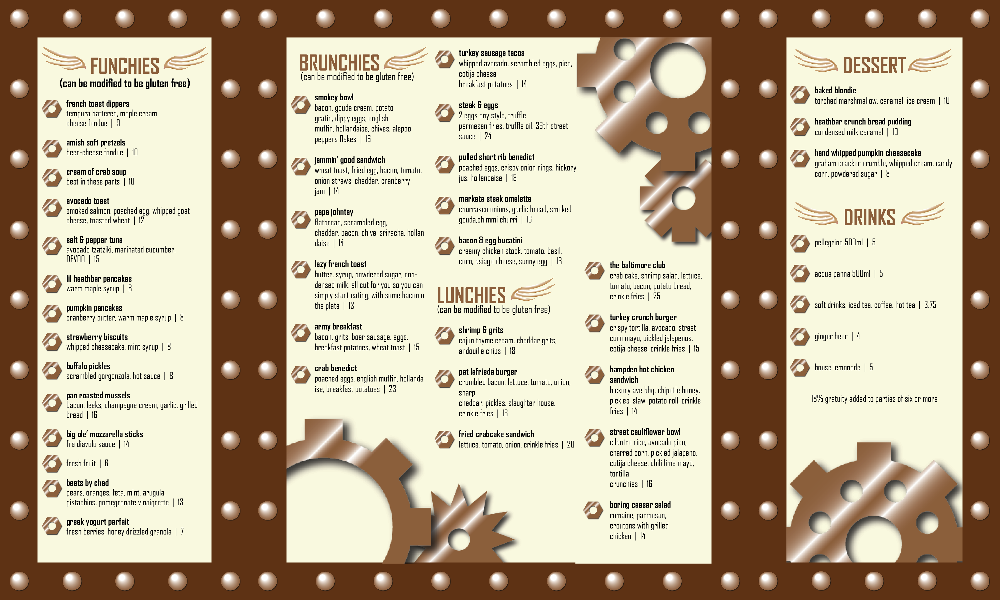
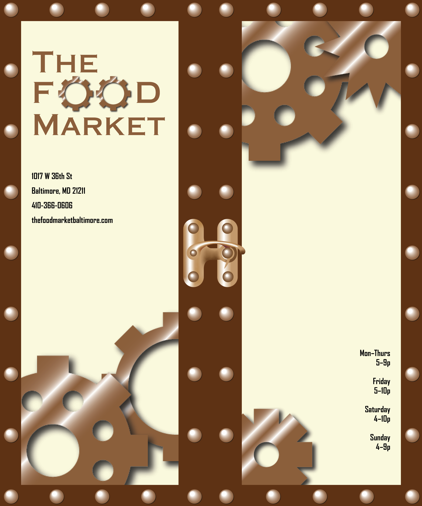

This menu was designed using the keyword “industrial-modern,” with the steampunk aesthetic being the first to come to mind when brainstorming the term. The design leans heavily into the steampunk aesthetic, using gears and cogs along with rivets and a warm color palette. The fonts were also chosen with the aesthetic in mind. The design also consists of three panels that can close, complete with a clasp on the front. Revisions included a change of the background color to a more neutral tan and the headers (“brunchies”, etc.) to brown to make them stand out from the other text.
 